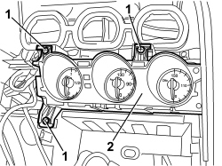
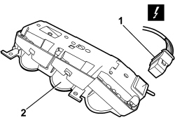

5560C51 COMBINED ANALOGUE CONTROL PANEL - R+R OR REPLACE
- Path
- Procedures > 55 ELECTRICAL EQUIPMENT > 5560 INSTRUMENTS > 5560C OTHER INSTRUMENTS > 5560C51 COMBINED ANALOGUE CONTROL PANEL - R+R OR REPLACE
- Kind
- repair procedure (removal / refitting; the operation number is the code)
- Applies to
- all engines; all production periods
- Interactive page
- https://sloeber94.github.io/elrnDB-aBrrSpdr/en/#/946002437
Applies to: all engines; all production periods
 Removing
Removing
 Refitting
RefittingRemove the three vents.
Op. 5010C34 AIR OUTLET IN CONSOLE - R+R
Remove the radio or, alternatively, the navigator.
Op. 5570T80 CAR RADIO EQUIPMENT - R+R
Op. 7040A17 AIR CONDITIONER CONTROLS
1. Undo the bolts.
2. Move the instrument panel slightly.

Applies to: all engines; all production periods
1. Disconnect the electrical connection.
Description | Component |
|---|---|
AUXILIARY INSTRUMENT |
2. Keep the control panel.

Applies to: all engines; all production periods
Refitting
Removing- Check that the control panel is not damaged.
- Connect the electrical connection.
- Position the control panel and tighten the bolts.
Op. 7040A17 AIR CONDITIONER CONTROLS
Topics linked from this page (4)
- 5010C34 AIR OUTLET IN CONSOLE - R+R
- 5570T80 CAR RADIO EQUIPMENT - R+R
- 7040A17 AIR CONDITIONER CONTROLS
- E20 EXTERIOR LIGHTING
Topics that link to this page (13)
- K025 ENGINE COOLANT TEMPERATURE GAUGE NOT WORKING
- K026 ENGINE COOLANT OVERHEATING WARNING LIGHT NOT WORKING
- K140 FUEL RESERVE WARNING LIGHT ON (WITH HIGHER LEVEL)
- K160 ENGINE OIL TEMPERATURE WARNING LIGHT NOT WORKING
- K161 ENGINE OIL TEMPERATURE GAUGE NOT WORKING
- S061 DASHBOARD CREAKING
- 1040AC FUEL LEVEL GAUGE CHECK
- E2535 CONTROLS LIGHTING - WIRING DIAGRAM
- E2535 CONTROLS LIGHTING - COMPONENT LOCATION
- E4010 INSTRUMENT PANEL - WIRING DIAGRAM
- E4010 INSTRUMENT PANEL - COMPONENT LOCATION
- E4010 INSTRUMENT PANEL - WIRING DIAGRAM
- E4010 INSTRUMENT PANEL - COMPONENT LOCATION